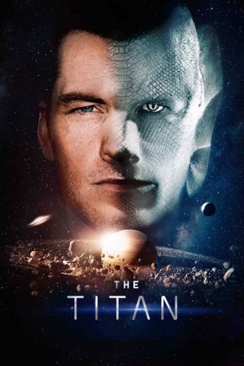

#8745 Titan, The - Evolve or Die
 
 IMDB-Wertung: 4.8 / 10
IMDB-Wertung: 4.8 / 10  Metascore: 33
Metascore: 33 
Der für seinen Wagemut bekannte Air-Force-Pilot Rick Janssen wird für ein Militärexperiment ausgesucht, mit dessen Hilfe ein Mensch für das Überleben auf dem Saturnmond Titan vorbereitet werden soll. Zunächst erscheint es, als wäre der Versuch erfolgreich: Rick entwickelt tatsächlich übermenschliche Fähigkeiten, aber dann stellt sich heraus, dass auch Nebenwirkungen nicht ausbleiben. Und die bringen nicht nur Rick selbst in Lebensgefahr, sondern auch seine Familie und vielleicht auch die gesamte Menschheit.
Science-Fiction-Film über eine Familie, die an einem bahnbrechenden Experiment im Weltall teilnimmt.
Jahr: 2018
Dauer: 97 Minuten
FSK:
Land: England Studio: Future FilmTonspuren: DD5.1 - ,
Untertitel: Englisch, , Französisch, , Japanisch, , , , ,
Auflösung: 1080p (1920x800) Größe: 4096 MB
Genre: Thriller, Sci-Fi
Regisseur: Lennart Ruff
Drehbuch: Max Hurwitz
Soundtrack: Fil Eisler
Darsteller:
 Sam Worthington als Lt. Rick Janssen
Sam Worthington als Lt. Rick Janssen- Taylor Schilling als Dr. Abi Janssen
 Tom Wilkinson als Prof. Martin Collingwood
Tom Wilkinson als Prof. Martin Collingwood- Agyness Deyn als Dr. Freya Upton
 Nathalie Emmanuel als W.O. Tally Rutherford
Nathalie Emmanuel als W.O. Tally Rutherford Noah Jupe als Lucas Janssen
Noah Jupe als Lucas Janssen Corey Johnson als Cl. Jim Peterson
Corey Johnson als Cl. Jim Peterson- Aleksandar Jovanovic als Sgt. Anton Werner
- Diego Boneta als Dr. Luis Hernandez
- Aaron Heffernan als Cpl. Zane Gorski
- Alex Lanipekun als Andrew Rutherford
- Naomi Battrick als Rayenne Gorski
- Steven Cree als Mjr. Timothy Pike
- Nathalie Poza als Cpt. Vita Ramos
- Francesc Garrido als Colonel Solano
- Kyle Soller als Dr. Elliot Blake
- Ben Aldridge als Lawrence
- Gustavo Salmerón als Felipe Ramos
- Noemi Parpaiola als Agnes Ramos
- Megan Rowland als Zoe Gorski
- Andrés González Cano als Aiden Gorski
- Samuel González Cano als Caden Gorski
- Luis Dyangani als Candidate (uncredited)
- Angelo Olivier als Med Tech (uncredited)
- Tristan Seith als Victor (uncredited)
Datei: X:\2018(N-Z)\Titan, The - Evolve or Die (2018, FSK, 1920x800).mkv seit 26.04.2018
Festplatte: HD 2018(G-Z)-2019(A-Z)
 Es gibt insgesamt 172 Filme in der Gruppe '2018(N-Z)'
Es gibt insgesamt 172 Filme in der Gruppe '2018(N-Z)'